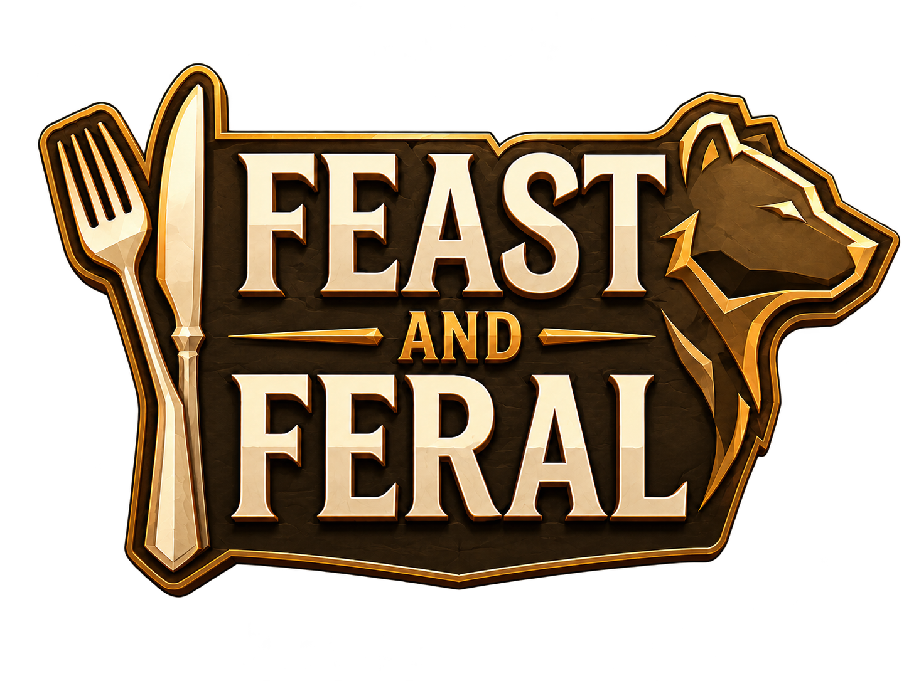
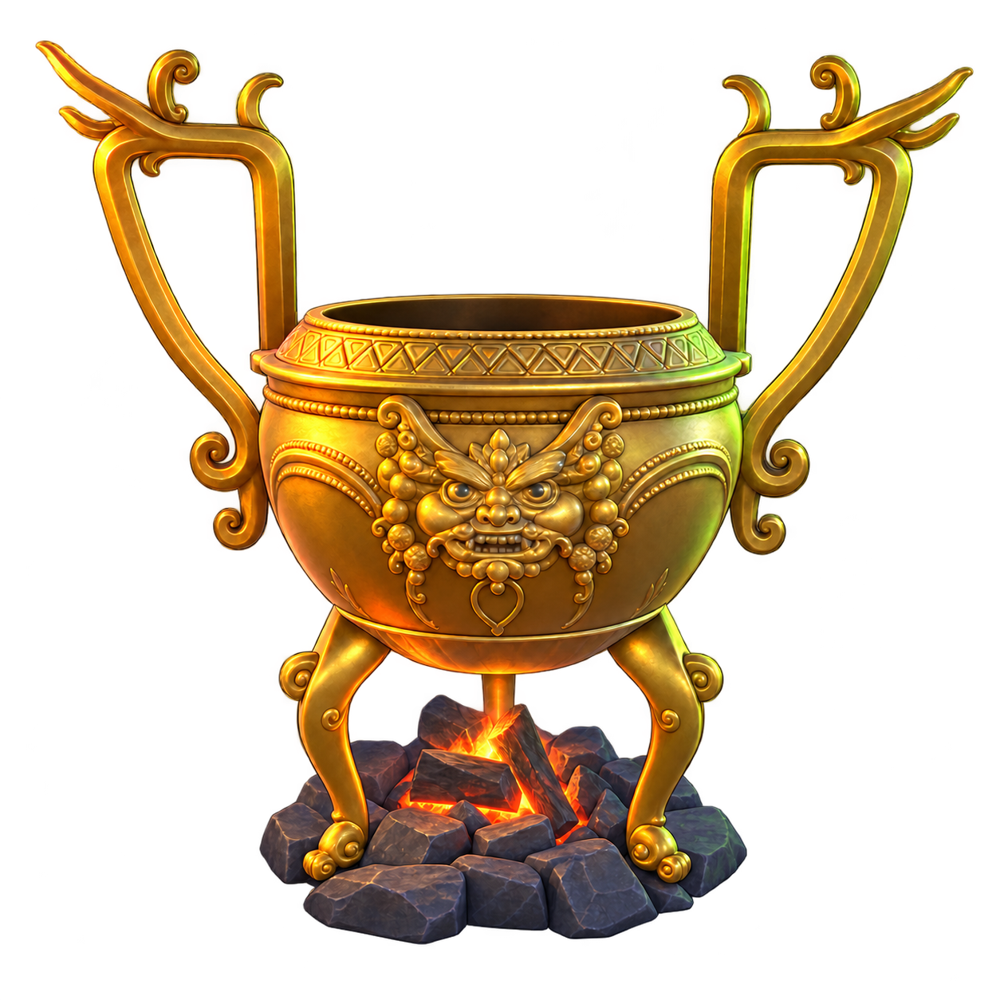
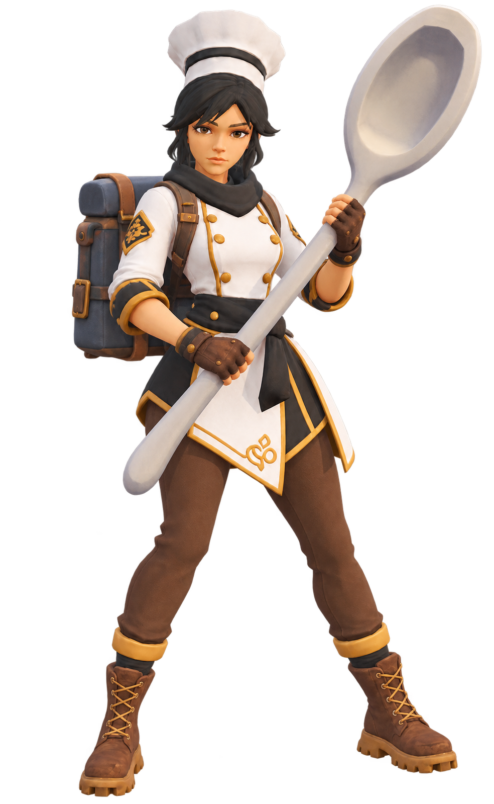
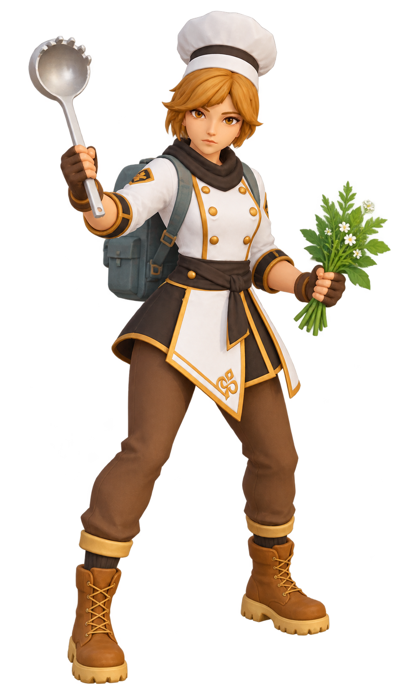
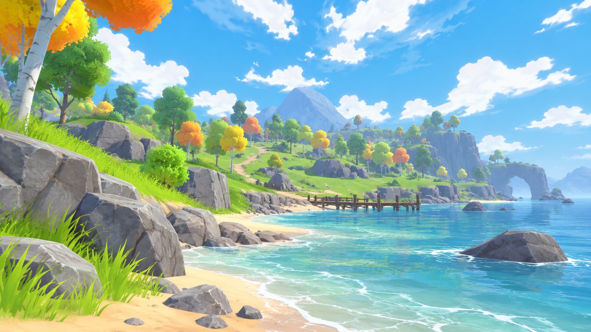
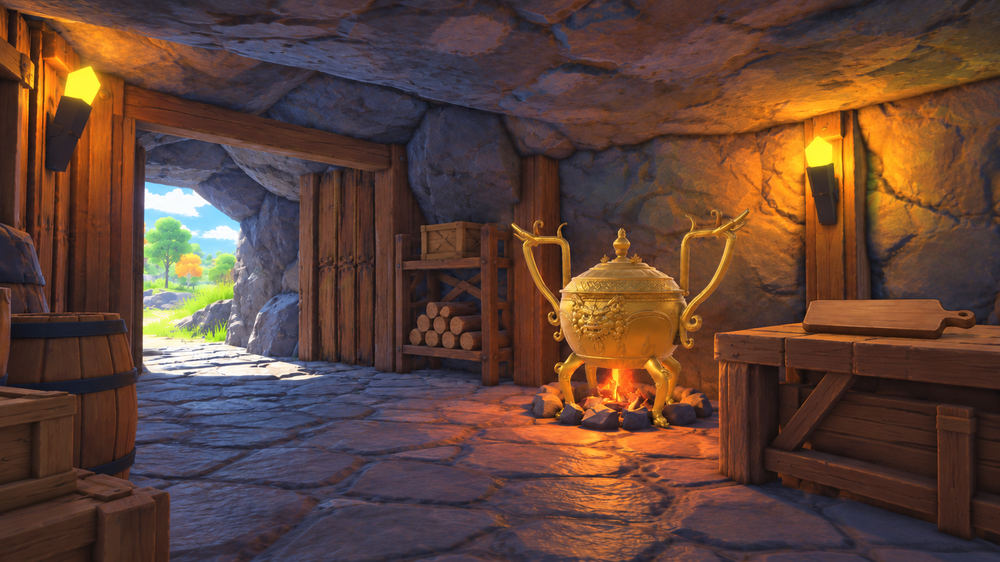
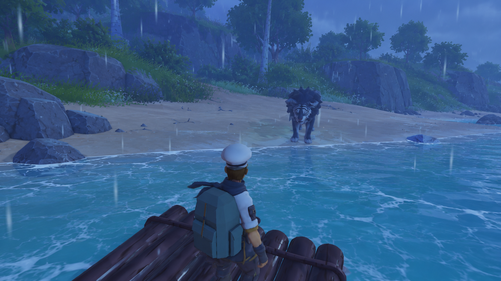
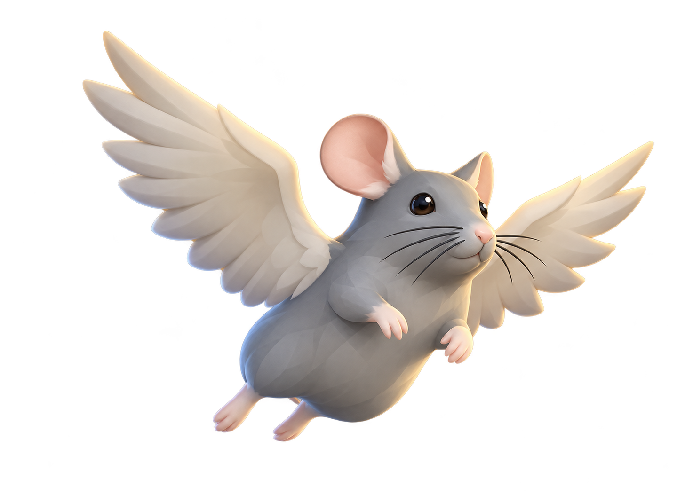
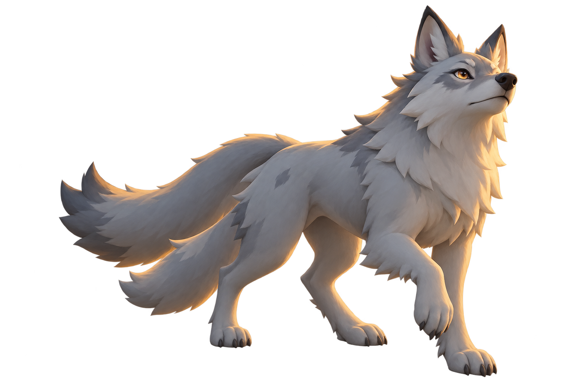
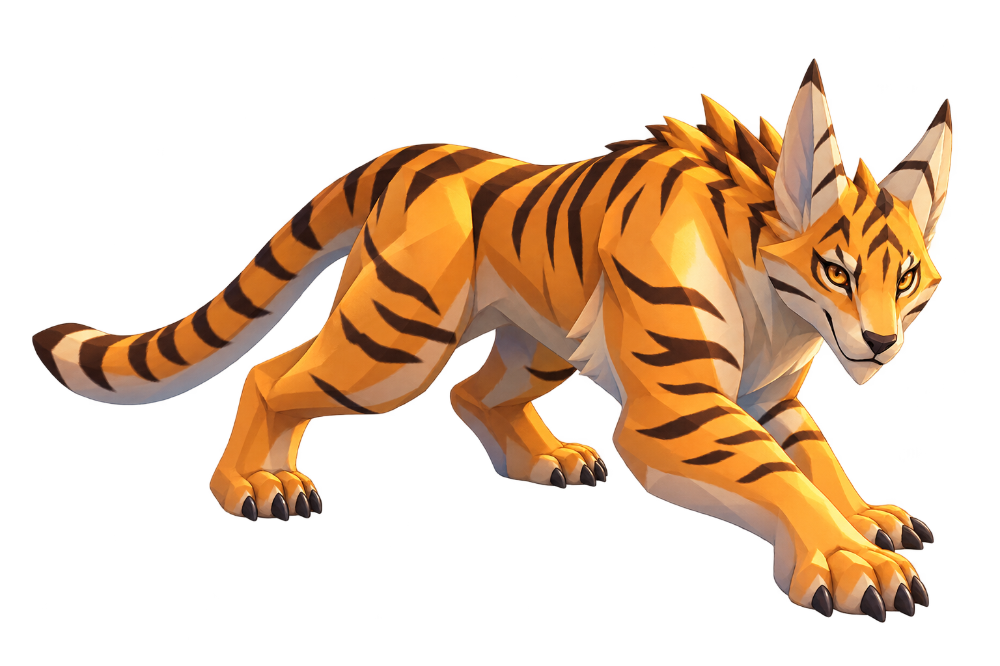

01 / VENTURE OUT
Beyond the shore.
Follow the coastline. Leave the familiar behind. The island has a taste for the unexpected.

Feast & Feral
A crew of chefs. A magical wild. Strange ingredients—and hungry creatures just beyond the firelight.
WELCOME TO THE WILDBRING YOUR APPETITE
Follow the coastline. Leave the familiar behind. The island has a taste for the unexpected.
Wild herbs, strange mushrooms, and something with teeth. Your next ingredient is out there.
A warm meal brings the crew together. Its scent brings something else.

THE CAVE KITCHENBACK AT BASE
One tap, one chop. Prepare the recipe’s full ingredient count on the board, then drag the batch into the hungry pot. Keep its fire fed with logs.
Chop once per ingredient. When ready, drag the batch or tap the pot.
Add logs to the fire, then prepare the first batch.
THE ISLAND’S HISTORYA TALE OF LIGHT & HUNGER
Long before the island became a hunting ground, it was a wild, magical sanctuary. This is the story of the adventurer who would become the Head Chef, the young guardian Beast, and the catastrophe that changed everything.
Exploring the island for rare ingredients, a young adventurer hears a whimper in a cavern. There he finds Beast: a wounded guardian child whose wild magic is beyond his control. A roasted dusk plum—and a gentle hand—begin an unlikely friendship.
Season after season, Beast and the adventurer explore, forage, and cook together. They dream of a new kind of guild: a home for chefs brave enough to hunt for impossible ingredients beyond the safety of the kitchen.
The Dark Beast Lord finds the last guardian, the same darkness that destroyed Beast’s family. Beast stands to protect his friend, but his power is still raw. The Lord tears out and shatters Beast’s magic, scattering its fragments across the island.
The fragments twist peaceful wildlife into feral hybrids, each carrying a piece of Beast’s lost power. The Lord curses them to frenzy at the smell of prepared food. The adventurer escapes, but the island—and Beast—are lost to the shadows.
Now the island’s scattered magic waits in the monsters’ flesh. Somewhere beyond the shore, a new crew of culinary adventurers is ready to answer the call.
THE FIELD COOKS04 CREW
Every expedition starts at the cave fire. Choose who’s taking point, then pack up and head into the wild.
Holds the line—and keeps the pot safe.

Quick on her feet, even when the wild stirs.

Turns kitchen tools into monster-hunting gear.
Forages quietly beyond the firelight.
Four cooks. Four ways to face the wild. Flip a portrait to discover their strengths.
VISUAL ARCHIVEGALLERY

GAME-INSPIRED PREVIEWDAYLIGHT EXPLORATION

GAME-INSPIRED PREVIEWHOME BY THE FIRE

GAME-INSPIRED PREVIEWKEEP YOUR DISTANCE
A window into the world of Feast & Feral. Game-inspired concept artwork.
FIELD GUIDEISLAND WILDLIFE
Small marvels drift above the canopy. Feral hunters roam the shore grass. Every trail has its own surprise.

A curious shadow over the cliffs.
Look above the trail. Not every rustle comes from the undergrowth.

Follow the tracks, not the howl.
The shore falls quiet for a reason. Stay close to your crew when the light begins to fade.

Stillness is part of the hunt.
Between the gold of the grass and the dark of the trees, a patient hunter waits.
THE NEXT COURSEAVAILABLE ON ITCH.IO
The latest Feast and Feral build is ready to explore. Visit our itch.io page to play and see what’s new.
Play on itch.io